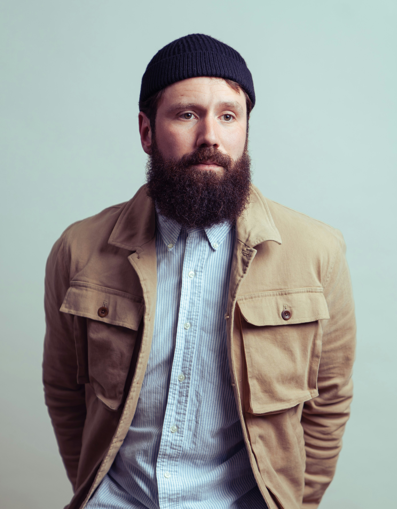

Material Honesty
We use materials as they want to be used. Concrete bears load. Wood breathes. Glass reveals. We resist the impulse to disguise structure or simulate surfaces.
Lumi Architecture Studio was founded in Helsinki in 2009 with a single conviction: that great architecture is not made through complexity, but through ruthless clarity of intent. We design buildings and interiors that respond to the Nordic climate — its long winters, fleeting summer light, and the particular quality of silence that comes with frozen ground.
Over seventeen years, we have completed more than 140 projects across Finland and Scandinavia, ranging from private lakeside retreats to civic towers. Each one is the result of a sustained conversation between programme, site, and material.
We work in Helsinki, Tampere, and Stockholm, with a core team of 28 architects, interior designers, and project architects.

We use materials as they want to be used. Concrete bears load. Wood breathes. Glass reveals. We resist the impulse to disguise structure or simulate surfaces.
Nordic light is an architectural material. We study sun angles, shadow depths, and the quality of diffused winter light as rigorously as any structural question.
We design for decades. A Lumi building should improve with weathering — its geometry becoming more legible, its materials more textured, as the years accumulate.
Founding Partner — Est. 2009

Senior Partner — Since 2011
Design Director — Since 2015
Interior Lead — Since 2018
Core Team Members
Partner Architects
Studio Locations